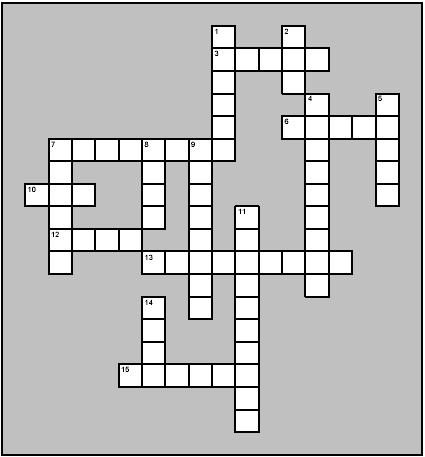

Read the lessons at the Vanderbilt Library website: http://divinity.lib.vanderbilt.edu/lectionary/cLent/cLent2.htm
Middle-School Pew-work ...Page 2
|
31 The
same day there came certain of the Pharisees, saying unto him,
Get thee out, and depart hence: for Herod will kill
thee. |
33 Nevertheless
I must walk to day, and to morrow, and the day following: for it
cannot be that a prophet perish out of Jerusalem. |
together,
as a hen doth gather her brood under her wings, and ye would
not! |
|
 |
4 down) At that time some __________ came to Jesus and said, 1 across) You had better get away from here! _____ wants to kill you. 5 down) _____ said to them: 10 across) Go tell that ___, “I am going to force out demons 8 down) and ____ people today and tomorrow, 6 across) and _____ days later I’ll be through.” 9 down) But I am going on my way today and ________ and the next day. 7 across) After all, Jerusalem is the place where ________ are killed. 13 across) _________, Jerusalem! Your people have killed the prophets 11 down) and have stoned the __________ who were sent to you. 7 down) I have often wanted to gather your ______, 1 down) as a hen gathers her ______ under her wings. 2 down) But ___ wouldn’t let me. 15 across) Now your ______will be deserted. 14 down) You won’t see me again until the ____ when you say, 12 across) Blessed is the one who comes in the name of the ____. 14 down) You won’t see me again until the ____ when you say, 12 across) Blessed is the one who comes in the name of the ____. |
U T A S L L I K E A
|
(Luke 13:34) Jerusalem, Jerusalem, the city that kills the prophets and stones those who are sent to it! How often have I desired to gather your children together as a hen gathers her brood under her wings, and you were not willing! (NRSV) |
Word
List |
from www.geocities.com/lectionarypuzzles/ Free to distribute for free with this notice. Words are in a straight line in all directions. |
||